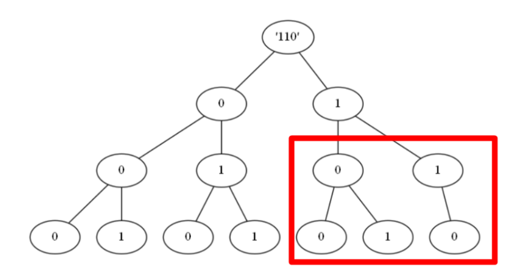

leetcode 600 不含连续1的非负整数
- 给定一个正整数 n，找出小于或等于 n 的非负整数中，其二进制表示不包含 连续的1 的个数。
输入: 5
输出: 5
解释:
下面是带有相应二进制表示的非负整数<= 5：
0 : 0
1 : 1
2 : 10
3 : 11
4 : 100
5 : 101
其中，只有整数3违反规则（有两个连续的1），其他5个满足规则。dfs的解法
dfs从1开始，按位增。如果当前结尾是1的话就补0； 如果是0的话就补0或者1；如果大于n就停止。
class Solution {
public:
int ans = 0;
int g_n;
int findIntegers(int n) {
g_n = n;
ans = 1;
dfs(1);
return ans;
}
/// 表示从1(01)开始填位
void dfs(int cur){
if(cur > g_n) return;
/// 递归一次, 一次情况 +1
ans++;
/// 如果当前位1, 下一位只能选10
if((cur & 1)){
dfs(cur << 1);
}
/// 当前位位0, 下一次可以是00,01两者
else{
dfs(cur << 1);
dfs((cur << 1)+1);
}
return;
}
};- 这种按位决策的思路, 可以引申到动态规划中。
- 我们考虑从二进制高位到低位填数, 如果当前二进制数为1, 则如果填0则肯定小于这个数(例如
101, 首位填0得到0XX肯定小于101), 当然可以填1, 填完1之后我们需要观察下一位进一步判断; 如果当前二进制数为0, 则必须填0, 然后看下一位。
对x的二进制分析
满足条件的数 res = 0
loop
如果当前位是1，res += (当前位为0的所有情况), 判断下一位
如果当前位是0, 直接判断下一位 - 因此我们需要一个备忘录记住(当前位位0的所有情况), 就可以直接查找了。可以记
f[i][j]表示二进制位数位i, 最高位为j且不超j11111的满足要求数的个数, 即f[2][0]表示不超01的个数,f[2][1]表示不超11的个数，如f[2][1] = 3分别是,00, 01,10有f[i + 1][0] = f[i][1]; f[i + 1][1] = f[i][0] + f[i][1];。 - 这样上述
当前位为0的所有情况也就是f[i][0], 也就是不超过01111...的个数。
class Solution {
public:
/// 判断最高位为1
int get_bina_len(int n) {
for (int i = 31; i >= 0; i--) {
/// n的二进制有多少位
if ((n>>i) & 1 == 1)
return i;
}
}
int findIntegers(int n) {
int len = get_bina_len(n);
vector<vector<int>> dp(len+2, vector<int>(2,0));
dp[1][0] = 1;
dp[1][1] = 2;
for (int i = 2; i <= len+1; i++) {
dp[i][0] = dp[i-1][1];
dp[i][1] = dp[i-1][0] + dp[i-1][1];
}
/// 从高到低
int res = 0;
int prev = 0;
for (int i = len; i >= 0; i--) {
/// 当前位数字
int cur = (n>>i) &1;
if (cur == 1)
/// 当前放0的所有结果
res += dp[i+1][0];
/// 不能继续下去因为这里不能放1了
if (prev == 1 && cur == 1)
break;
/// 如果没有连续的1说明这里可以继续放1
prev = cur;
/// 加一个当前的值
if (i == 0) res++;
}
return res;
}
};01字典树+动态规划

由以上字典树, 我们可以看出, 路径可由若干以0为根节点的满二叉子树组成, 考虑用 dp[k][t] 表示根节点为 k，高度为 t 的满二叉树中，满足题意的路径数量。
如果根节点为0, 有
dp[0][t]=dp[0][t−1]+dp[1][t−1], 子节点可以为0也可以为1如果根节点为1, 子节点只能为0,
dp[1][t]=dp[0][t−1]所以有
dp[0][t]=dp[0][t−1]+dp[1][t−1]=dp[0][t−1]+dp[0][t−2], 即dp[t]= dp[t−1]+dp[t−2],t≥2; dp[1]=1
如上对110，可以看成根为0,高为3的子树路径数量 + 根为0,高位2的路径数量。因此可以得到如下
class Solution {
public:
int findIntegers(int n) {
// 预处理第 i 层满二叉树的路径数量
vector<int> dp(31);
dp[0] = dp[1] = 1;
for (int i = 2; i < 31; ++i) {
dp[i] = dp[i - 1] + dp[i - 2];
}
// pre 记录上一层的根节点值，res 记录最终路径数
int pre = 0, res = 0;
for (int i = 29; i >= 0; --i) {
/// 从顶到底分析
int val = 1 << i;
// if 语句判断 当前子树是否有右子树, 如果为真, 左右子树高为i+1
/// 当前位二进制值为1, 说明才有右子树
if ((n & val) != 0) {
// 有右子树
n -= val;
res += dp[i + 1]; // 先将左子树（满二叉树）的路径加到结果中
// 处理右子树
if (pre == 1) {
// 上一层为 1，之后要处理的右子树根节点肯定也为 1
// 此时连续两个 1，不满足题意，直接退出
break;
}
// 标记当前根节点为 1
pre = 1;
} else {
// 无右子树，下一层再继续判断
pre = 0;
}
if (i == 0) {
++res;
}
}
return res;
}
};多重hashmap和gcd辗转相除法
用一个下标从 0 开始的二维整数数组 rectangles 来表示 n 个矩形，其中 rectangles[i] = [widthi, heighti] 表示第 i 个矩形的宽度和高度。
如果两个矩形 i 和 j（i < j）的宽高比相同，则认为这两个矩形 可互换 。更规范的说法是，两个矩形满足 widthi/heighti == widthj/heightj（使用实数除法而非整数除法），则认为这两个矩形 可互换 。
计算并返回 rectangles 中有多少对 可互换 矩形。
输入：rectangles = [[4,8],[3,6],[10,20],[15,30]]
输出：6
解释：下面按下标（从 0 开始）列出可互换矩形的配对情况：
- 矩形 0 和矩形 1 ：4/8 == 3/6
- 矩形 0 和矩形 2 ：4/8 == 10/20
- 矩形 0 和矩形 3 ：4/8 == 15/30
- 矩形 1 和矩形 2 ：3/6 == 10/20
- 矩形 1 和矩形 3 ：3/6 == 15/30
- 矩形 2 和矩形 3 ：10/20 == 15/30可以使用辗转相除法, 横纵坐标除以它们的公因数。对于列表
[4,8]这样的存储在哈希表中, 可以使用多重hashmap, 也就是unordered_map<int, unordered_map<int, long long>>辗转相除法 即
return b == 0 ? a : gcd(b, a%b);
class Solution {
public:
int gcd (int a, int b) {
if (b == 0)
return a;
else
return gcd(b, a%b);
}
long long interchangeableRectangles(vector<vector<int>>& rectangles) {
int n = rectangles.size();
if (n < 2)
return 0;
// 多重hashmap
unordered_map<int, unordered_map<int, long long>> use_map;
for (auto&& rect : rectangles) {
int mod = gcd (rect[0], rect[1]);
rect[0] = rect[0] / mod;
rect[1] = rect[1] / mod;
use_map[rect[0]][rect[1]]++;
}
long long res = 0;
/// 当重复个数为n, 可互换矩形对数为n(n-1)/2
for (auto&& m : use_map) {
for (auto&& iter : m.second)
res += (iter.second * (iter.second-1))/2;
}
return res;
}
};数据类型范围
int, -2147483648 ~ 2147483647 (2^31 - 1), 2* 10^10级别int和long范围一致long long-9223372036854775808 ~ 9223372036854775807(2^63 - 1) 10^19级别，可以用来表示int范围内的乘法。
暴力回溯求解 两个回文子序列长度的最大乘积
- 大量的题目都能用暴力方法求解(即便有更快的办法), 暴力的办法至少能通过很多测试用例, 有部分的得分
给你一个字符串 s ，请你找到 s 中两个 不相交回文子序列 ，使得它们长度的 乘积最大 。两个子序列在原字符串中如果没有任何相同下标的字符，则它们是 不相交 的。
请你返回两个回文子序列长度可以达到的 最大乘积 - 暴力对的做法
class Solution { public: int ans = 0; int maxProduct(string s) { string s1, s2; dfs(s, s1, s2, 0); return ans; } void dfs(string &s, string s1, string s2, int index) { /// 每次循环都判断下是否满足回文, 储存最大积 if(check(s1) && check(s2)) ans = max(ans, int(s1.size() * s2.size())); if(index == s.size()) return; /// 对每个字符都有三种选择, s1用,s2用, 都不用 /// 当程序执行完之时, 意味着遍历完了所有的情况 dfs(s, s1 + s[index], s2, index + 1);//子序列s1使用该字符 dfs(s, s1, s2 + s[index], index + 1);//子序列s2使用该字符 dfs(s, s1, s2, index + 1);//子序列都不使用该字符 } bool check(string &s) { int l = 0, r = s.size() - 1; while(l < r) { if(s[l++] != s[r--]) return false; } return true; } }; /// 针对dfs函数,可以进一步用引用加速 void dfs(string &s, string &s1, string &s2, int index) { if(check(s1) && check(s2)) ans = max(ans, int(s1.size() * s2.size())); if(index == s.size()) return; //// 以下是典型的回溯, 穷举法 s1.push_back(s[index]); dfs(s, s1, s2, index + 1); s1.pop_back(); s2.push_back(s[index]); dfs(s, s1, s2, index + 1); s2.pop_back(); dfs(s, s1, s2, index + 1); }
质数
判断质数
方式如下
bool IsPrime(int num){
if(num==1) return false;
if(num==2) return true;
for(int i=2;i<sqrt(num)+1;i++){
if((num%i)==0)
return false;
}
return true;
}分解质因数
使用短除法, 不断除2~n的整数, 直到n==1
int QFContract(int n) //用短除法对合数进行分解
{
while(n > 1)
{
for(int i= 2; i<= n; i++)
{
if(n % i==0) //短除法分解质因数
{
a = a / i;/// 质因子为i
cout << " i" <<endl; /// 输出质因子为i
break;
}
}
}
}650. 只有两个键的键盘
最初记事本上只有一个字符 'A' 。你每次可以对这个记事本进行两种操作：
Copy All（复制全部）：复制这个记事本中的所有字符（不允许仅复制部分字符）。
Paste（粘贴）：粘贴 上一次 复制的字符。
给你一个数字 n ，你需要使用最少的操作次数，在记事本上输出 恰好 n 个 'A' 。返回能够打印出 n 个 'A' 的最少操作次数。
输入：3
输出：3
解释：
最初, 只有一个字符 'A'。
第 1 步, 使用 Copy All 操作。
第 2 步, 使用 Paste 操作来获得 'AA'。
第 3 步, 使用 Paste 操作来获得 'AAA'。- 基于分解质因数, 例如
12 = 2 * 2 * 3, 可以认为先生成第一个质数2, 即复制一次粘贴一次共两次, 然后复制一次粘贴1次生成4, 最后复制一次粘贴2次得到12。一共需要七步。
class Solution {
public:
int minSteps(int n) {
if (n == 1)
return 0;
vector<int> primes;
int number = n;
while(number > 1)
{
for(int i=2; i<=number; i++)
{
if(number % i==0) //短除法分解质因数, i为质因数
{
number = number/i;
primes.push_back(i); /// 加入因子, 顺序应该从小到大
break;
}
}
}
/// 合数
int result = primes[0]; /// copy + paste, 生成第一个质数次数
for (int i = 1; i < primes.size(); i++) {
result++; // 拷贝次数
result+= primes[i]-1; //粘贴次数
}
return result;
}
};